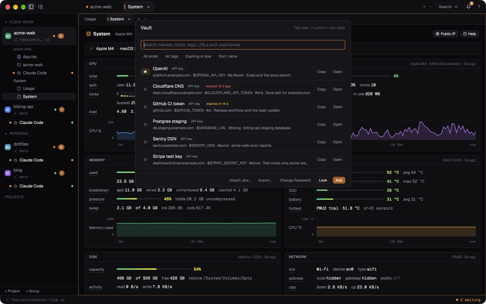

Privacy & security
Flashex has no telemetry, no analytics, no accounts and no crash reporting. It sends nothing about you or your work anywhere.
Every network connection
| What | When | Turn off |
|---|---|---|
Update check: api.github.com for the latest release, then the manifest and, only if you choose Update, the dmg. Through /usr/bin/curl, HTTPS only. | At start and at most once a day. Development builds never check. | [updates] check = false |
| Browser panel: the pages you open. Address-bar text that is not an address goes to DuckDuckGo. | When you open a page. | search_url = "" for the search |
| Git: fetch, pull and push with your own git and credentials. | Only when you start them. | Background fetch is off unless autofetch_minutes is set |
Language servers: programs already on your system, started as local processes. Flashex downloads none. What a server does itself (rust-analyzer running cargo) is up to it. | When you open a file of that language. | [lsp] enabled = false |
| AI help: see below. | Only when you press Return on a # line or click. | [ai] enabled = false |
Claude status: a GET of status.claude.com/api/v2/summary.json. | Once a minute while the Usage dashboard is open. Off by default. | claude_status |
Anthropic usage API: a GET of api.anthropic.com/api/oauth/usage with Claude Code's own login. | At most once a minute while the Usage dashboard is open and no status line has reported the limits. Off by default; with it off, the login is never read. | usage_api |
Public IP: a GET of api.ipify.org. | Every five minutes while the System dashboard is on screen. Off by default. | public_ip |
The optional requests send nothing but the request itself (your IP address and a Flashex/<version> user agent; the usage API also Claude Code's token, given to curl on its standard input, never on the command line).
AI help
Nothing is sent until you press Return on a # … line at a prompt, or click Explain, Fix, Send to AI… or Test connection.
#→ command sends what you typed after#, your operating system, your shell's name and the current folder (as~/…). Your last command and its exit code only if you turn onsend_last_command, and never when it looks like it contains a secret.- Explain, Fix and Send to AI… send that block's command, folder, exit code and output, trimmed to its first and last lines (
output_lines,output_kb), with passwords, tokens and keys replaced by***. - Where it goes is your
provider: theclaude,codexorgeminiprogram on your computer (under your own login and their terms, run in an empty temporary folder with no tools it could act with); your owncommandon its standard input; or an OpenAI-compatible server atbase_url, which with a local model never leaves your computer. HTTPS is required except forlocalhost,127.0.0.1and::1. - Send to Claude / Codex / Gemini with an agent running in a terminal only types the text there; it is sent when you press Return.
- The API key is kept in the macOS Keychain (Linux: a file only you can read), never in
config.toml, and is sent only to your server. - Suggestions from your history are computed on your computer and never sent.
What Flashex reads on your Mac
- The Usage dashboard reads Claude Code's transcripts (
~/.claude/projectsor the account's folder) while it is on screen: only timestamps, model names, token counts, the length of visible text, the session id and the last name of the working folder. No message text is kept or logged. To label accounts it reads the e-mail and organisation name from each folder's.claude.json, never a token. - The status line script Flashex installs when you press Apply keeps only the rate limits out of what Claude Code hands it, writes them to a file in
~/Library/Caches/flashexand sends nothing anywhere. - Claude Code's
settings.jsonis changed only when you install hooks or apply the status line (a backup is kept next to it), and when Flashex updates hooks it installed earlier. - The System dashboard reads this Mac's counters in-process, without root, and runs
psandnettoponly while it is on screen. Nothing is stored; chart history lives in memory.
The Vault
The Vault (command palette › Vault…) keeps secrets in one encrypted file in Flashex's own folder on your Mac, ~/Library/Application Support/flashex/vault/vault.fxv, never in the cloud and never in the macOS Keychain. Without your vault password the file is unreadable: the content is encrypted with XChaCha20-Poly1305 and the password is stretched with Argon2id. The last three versions of the file are kept next to it as backups; changing the password removes them, but copies elsewhere (Time Machine, other backups) still open with the old password, with the content they had then.
Touch ID is optional. Turning it on stores a key in your login keychain that opens the vault without the vault password; Flashex asks for your fingerprint before it reads that key, but the check happens inside Flashex. With Touch ID on, the vault is as strong as your macOS login password and keychain: a program you allowed to read Flashex's keychain item ("Always Allow"), for example security find-generic-password, could read the key. Adding or removing a fingerprint turns Touch ID off for the vault.

The Vault does not protect against a program running as you while the vault is open, a keylogger, or a program you allow to read a value: it gets the value and can keep it.
Everything in an entry is inside that encrypted file: its secret fields, and also its name, note, tags, URL, username and dates. Search never looks at secret values. To point out a secret stored in two entries, Flashex compares keyed hashes of the values (with a random key made at each unlock) in memory while the vault is open; no hash is written anywhere. Generated passwords and tokens come from the operating system's random number generator. Import .env… reads the file you name (never through a symbolic link), adds its values as entries, and then offers to delete it, checking first that it is still the file it read; when the vault does not hold every value of it, deleting needs a second confirmation. Copies of it elsewhere (backups, version control history) are not touched. Export… writes only an encrypted copy of the vault, opened with the vault password and not with Touch ID; Flashex has no plain-text export. When you Copy a value or allow a request, the entry's "last used" time is noted in the vault.
Security
- The
flashexcommand talks to the app over a Unix socket that only your user can open (0600, in a0700folder).[api] enabled = falseturns it off. - Programs in a terminal may write to the clipboard (OSC 52,
clipboard_write) but can never read it. - Shell integration marks are signed, so programs cannot fake command blocks.
- Command lines that look like they contain a secret are never saved in the session, offered to run again or suggested from history.
- Updates are verified with Flashex's own signature, the exact size and SHA-256, and the new app's code signature before they replace anything (Updates).